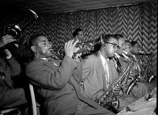

Jazz
La Libertad del Alma
La música clásica es el lenguaje universal que trasciende el tiempo y el espacio. Desde las composiciones de Bach, Beethoven y Mozart hasta las más modernas, la música clásica es la cumbre de la expresión artística humana. Cada obra es un viaje profundo en el alma, una travesía a través de los paisajes emocionales más complejos. Su riqueza armónica y la precisión de su interpretación no solo nos muestran la perfección técnica, sino que nos invitan a la reflexión, a la calma y a la maravilla de la creación. La música clásica no solo se escucha, se siente. En sus melodías, encontramos consuelo, inspiración, y una conexión con el pasado. Es la voz de la tradición que sigue viva en los corazones de quienes aprecian la belleza del arte en su forma más pura y sublime. En sus notas, encontramos la capacidad de soñar más allá de las limitaciones humanas, de conectar con lo eterno y lo divino. Es música para el alma, un refugio que nunca pasa de moda.
Instrumentos Claves en el Jazz
Saxofón
Uno de los instrumentos más icónicos del jazz, con gran expresividad y variedad de estilos.
Trompeta
Popularizada por artistas como Louis Armstrong, aporta potencia y melodía al jazz.
Piano
Elemento clave en la armonía del jazz, permitiendo gran improvisación.
Contrabajo
Fundamental para la base rítmica y armónica en el jazz tradicional y moderno.
Batería
Define los ritmos complejos del jazz con platillos, caja y bombo.